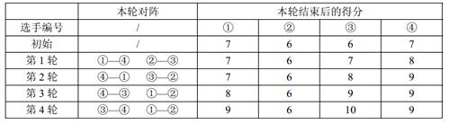

基础算法-排序
P1177 【模板】快速排序
题目描述
利用快速排序算法将读入的 N
快速排序是信息学竞赛的必备算法之一。对于快速排序不是很了解的同学可以自行上网查询相关资料，掌握后独立完成。（C++
选手请不要试图使用 STL，虽然你可以使用 sort
一遍过，但是你并没有掌握快速排序算法的精髓。）
输入格式
第 1 行为一个正整数 N 2 行包含 N a i A i 109 。
输出格式
将给定的 N
输入输出样例
输入: #1
输出: #1
说明&提示
对于 20% 的数据，有 N ≤ 103
对于 100% 的数据，有 N ≤ 105
解题思路
快排模板了，快排的思路是：选择一个枢纽元，将小于等于枢纽元的放数组左半部分，大于等于枢纽元的放右半部分，最后递归排序左半部分和右半部分
所以关键是选择枢纽元，一种简单的方法是随机选择，但在数组所有值完全相同的情况下还是会稳定退化到
O (n 2 )
解答代码
快排，要开 O2 优化才能全部通过
1 2 3 4 5 6 7 8 9 10 11 12 13 14 15 16 17 18 19 20 21 22 23 24 25 26 27 28 29 30 31 32 33 34 35 36 37 38 39 40 41 42 43 44 45 46 47 48 49 50 51 52 53 54 55 56 57 58 59 60 61 62 63 64 65 66 67 68 69 70 #include <cstdio> #include <cstdlib> #include <ctime> using namespace std;template <typename T>void swap (T& a, T& b) T c = a; a = b; b = c; } template <typename T>inline bool comp (T a, T b) return a < b; } template <typename T = int >void quicksort (T nums[], int start, int end) { if (start >= end) return ; else if (start + 1 == end) { if (!comp (nums[start], nums[end])) swap (nums[start], nums[end]); } else { int idx = rand () % (end - start + 1 ) + start; swap (nums[start], nums[idx]); int left = start, right = end; while (left < right) { while (left < right && !comp (nums[right], nums[start])) right--; while (left < right && !comp (nums[start], nums[left])) left++; if (left < right) swap (nums[left], nums[right]); else break ; } swap (nums[start], nums[left]); quicksort <T>(nums, start, left - 1 ); quicksort <T>(nums, left + 1 , end); } } int n, t;int nums[100007 ];int main () srand ((unsigned )time (0 )); scanf ("%d" , &n); for (int i = 0 ; i < n; ++i) { scanf ("%d" , &t); nums[i] = t; } quicksort (nums, 0 , n - 1 ); for (int i = 0 ; i < n; ++i) { printf ("%d " , nums[i]); } return 0 ; }
堆排序，不开 O2 也能通过
1 2 3 4 5 6 7 8 9 10 11 12 13 14 15 16 17 18 19 20 21 22 23 24 25 26 27 28 29 30 31 32 33 34 35 36 37 38 39 40 41 42 43 44 45 46 47 48 49 50 51 52 53 54 55 56 57 58 59 60 61 62 63 64 65 66 67 68 69 70 71 72 73 74 75 76 77 78 #include <cstdio> using namespace std;int N;int s[100007 ];template <typename T>void swap (T& a, T& b) T c = a; a = b; b = c; } template <typename T>inline bool comp (T a, T b) return a < b; } template <typename T>inline void percdown (T nums[], int target, int n) int a = target * 2 + 1 , b = a + 1 , x; while (true ) { x = target; if (a < n && comp (nums[x], nums[a])) x = a; if (b < n && comp (nums[x], nums[b])) x = b; if (x != target) swap <T>(nums[x], nums[target]); else break ; target = x, a = x * 2 + 1 , b = a + 1 ; } } template <typename T>inline void percup (T nums[], int target) int f = target - 1 >> 1 ; while (target > 0 && comp (nums[f], nums[target])) { swap <T>(nums[f], nums[target]); target = f; f = target - 1 >> 1 ; } } template <typename T>inline void buildheap (T nums[], int n) for (int i = n / 2 ; i >= 0 ; --i) { percdown <T>(nums, i, n); } } template <typename T>void heapsort (T nums[], int n) buildheap <T>(nums, n); for (int i = n - 1 ; i > 0 ; --i) { swap (nums[0 ], nums[i]); percdown <T>(nums, 0 , i); } } int main () int tmp; scanf ("%d" , &N); for (int i = 0 ; i < N; ++i) { scanf ("%d" , &tmp); s[i] = tmp; } heapsort <int >(s, N); for (int i = 0 ; i < N; ++i) { printf ("%d " , s[i]); } return 0 ; }
归并排序，不开 O2 也能通过
1 2 3 4 5 6 7 8 9 10 11 12 13 14 15 16 17 18 19 20 21 22 23 24 25 26 27 28 29 30 31 32 33 34 35 36 37 38 39 40 41 42 43 44 45 46 47 48 49 50 51 52 53 54 55 56 57 58 59 #include <cstdio> using namespace std;int N;int s[100007 ], tmp[100007 ];template <typename T>void swap (T& a, T& b) T c = a; a = b; b = c; } template <typename T>inline bool comp (T a, T b) return a < b; } template <typename T>void merge (T nums[], T tmp[], int left, int mid, int right) int i = left, j = mid, k = left; while (i < mid && j < right) { if (nums[i] < nums[j]) tmp[k++] = nums[i++]; else tmp[k++] = nums[j++]; } while (i < mid) tmp[k++] = nums[i++]; while (j < right) tmp[k++] = nums[j++]; for (k = left; k < right; ++k) nums[k] = tmp[k]; } template <typename T>void mergesort (T nums[], T tmp[], int start, int end) if (start < end - 1 ) { int mid = start + (end - start >> 1 ); mergesort <T>(nums, tmp, start, mid); mergesort <T>(nums, tmp, mid, end); merge <T>(nums, tmp, start, mid, end); } } int main () int tp; scanf ("%d" , &N); for (int i = 0 ; i < N; ++i) { scanf ("%d" , &tp); s[i] = tp; } mergesort <int >(s, tmp, 0 , N); for (int i = 0 ; i < N; ++i) { printf ("%d " , s[i]); } return 0 ; }
P1059 [NOIP2006 普及组]
明明的随机数
题目描述
明明想在学校中请一些同学一起做一项问卷调查，为了实验的客观性，他先用计算机生成了N 1 到1000 之间的随机整数(N ≤ 100) ，对于其中重复的数字，只保留一个，把其余相同的数去掉，不同的数对应着不同的学生的学号。然后再把这些数从小到大排序，按照排好的顺序去找同学做调查。请你协助明明完成“去重”与“排序”的工作。
输入格式
输入有两行，第1 行为1 个正整数，表示所生成的随机数的个数N
第2 行有N
输出格式
输出也是两行，第1 行为1 个正整数M
第2 行为M
输入输出样例
输入: #1
1 2 10 20 40 32 67 40 20 89 300 400 15
输出: #1
1 2 8 15 20 32 40 67 89 300 400
说明&提示
无
解题思路
N
解答代码
1 2 3 4 5 6 7 8 9 10 11 12 13 14 15 16 17 18 19 20 21 22 23 24 #include <cstdio> #include <cstring> using namespace std;int s[1007 ];int n;int main () scanf ("%d" , &n); memset (s, 0 , sizeof (s)); int t, cnt = 0 ; for (int i = 0 ; i < n; ++i) { scanf ("%d" , &t); if (++s[t] == 1 ) ++cnt; } printf ("%d\n" , cnt); for (int i = 0 ; i < 1007 ; ++i) { if (s[i] != 0 ) { printf ("%d " , i); } } putchar ('\n' ); return 0 ; }
1 2 3 4 5 6 7 8 9 10 11 12 13 14 15 16 17 18 19 20 21 import Java.util.*;public class Main { public static void main (String[] args) { Scanner sc = new Scanner (System.in); int n = sc.nextInt(), cnt = 0 ; int [] s = new int [1007 ]; for (int i = 0 ; i < n; ++i) { if (++s[sc.nextInt()] == 1 ) ++cnt; } System.out.println(cnt); for (int i = 0 ; i < 1005 ; ++i) { if (s[i] > 0 ) { System.out.printf("%d " , i); } } System.out.println(); sc.close(); } }
1 2 3 4 5 6 input ()s = sorted (set (map (int , input ().split()))) print (len (s))for ss in s: print (ss, end=' ' ) print ()
P1068 [NOIP2009 普及组]
分数线划定
题目描述
世博会志愿者的选拔工作正在 A
市如火如荼的进行。为了选拔最合适的人才，A 150% 划定，即如果计划录取m m × 150%
现在就请你编写程序划定面试分数线，并输出所有进入面试的选手的报名号和笔试成绩。
输入格式
第一行，两个整数 n , m (5 ≤ n ≤ 5000, 3 ≤ m ≤ n )n m m × 150%n
第二行到第 n + 1k (1000 ≤ k ≤ 9999)
输出格式
第一行，有2 个整数，用一个空格隔开，第一个整数表示面试分数线；第二个整数为进入面试的选手的实际人数。
从第二行开始，每行包含2 个整数，中间用一个空格隔开，分别表示进入面试的选手的报名号和笔试成绩，按照笔试成绩从高到低输出，如果成绩相同，则按报名号由小到大的顺序输出。
输入输出样例
输入: #1
1 2 3 4 5 6 7 6 3 1000 90 3239 88 2390 95 7231 84 1005 95 1001 88
输出: #1
1 2 3 4 5 6 88 5 1005 95 2390 95 1000 90 1001 88 3239 88
说明&提示
m × 150% = 3 × 150% = 4.54 。保证4 个人进入面试的分数线为88 ，但因为88 有重分，所以所有成绩大于等于88 的选手都可以进入面试，故最终有5 个人进入面试。
解题思路
笔试成绩范围才 100 ,人数也才 9000 ，非常适合用桶排序
解答代码
1 2 3 4 5 6 7 8 9 10 11 12 13 14 15 16 17 18 19 20 21 22 23 24 25 26 27 28 29 30 31 32 33 34 35 36 37 38 39 40 41 42 43 44 45 46 47 48 49 50 51 52 53 54 55 56 57 58 59 60 61 62 63 64 65 66 67 68 69 70 71 72 73 74 75 76 77 78 79 80 81 82 83 84 85 #include <cstdio> #include <cstdlib> #include <cstring> #include <ctime> using namespace std;int s[107 ]; int id[107 ][5007 ]; int n, m;template <typename T>void swap (T& a, T& b) T c = a; a = b; b = c; } template <typename T>inline bool comp (T a, T b) return a < b; } template <typename T = int >void quicksort (T nums[], int start, int end) { if (start >= end) return ; else if (start + 1 == end) { if (!comp (nums[start], nums[end])) swap (nums[start], nums[end]); } else { int idx = rand () % (end - start + 1 ) + start; swap (nums[start], nums[idx]); int left = start, right = end; while (left < right) { while (left < right && !comp (nums[right], nums[start])) right--; while (left < right && !comp (nums[start], nums[left])) left++; if (left < right) swap (nums[left], nums[right]); else break ; } swap (nums[start], nums[left]); quicksort <T>(nums, start, left - 1 ); quicksort <T>(nums, left + 1 , end); } } int main () scanf ("%d%d" , &n, &m); memset (s, 0 , sizeof (s)); m = int (m * 1.5 ); int t, d; for (int i = 0 ; i < n; ++i) { scanf ("%d%d" , &d, &t); id[t][s[t]++] = d; } int cnt = 0 ; for (t = 105 ; t >= 0 ; --t) { m -= s[t]; cnt += s[t]; if (m <= 0 ) break ; } printf ("%d %d\n" , t, cnt); for (int i = 105 ; i >= t; --i) { if (s[i] == 0 ) continue ; else if (s[i] == 1 ) { printf ("%d %d\n" , id[i][0 ], i); } else { quicksort (id[i], 0 , s[i] - 1 ); for (int j = 0 ; j < s[i]; ++j) { printf ("%d %d\n" , id[i][j], i); } } } return 0 ; }
P1051 [NOIP2005 提高组]
谁拿了最多奖学金
题目描述
某校的惯例是在每学期的期末考试之后发放奖学金。发放的奖学金共有五种，获取的条件各自不同：
院士奖学金，每人8000 元，期末平均成绩高于80 分（ > 80 ），并且在本学期内发表1 篇或1 篇以上论文的学生均可获得；
五四奖学金，每人4000 元，期末平均成绩高于85 分（ > 85 ），并且班级评议成绩高于80 分（ > 80 ）的学生均可获得；
成绩优秀奖，每人2000 元，期末平均成绩高于90 分（ > 90 ）的学生均可获得；
西部奖学金，每人1000 元，期末平均成绩高于85 分（ > 85 ）的西部省份学生均可获得；
班级贡献奖，每人850 元，班级评议成绩高于80 分（ > 80 ）的学生干部均可获得；
只要符合条件就可以得奖，每项奖学金的获奖人数没有限制，每名学生也可以同时获得多项奖学金。例如姚林的期末平均成绩是87 分，班级评议成绩82 分，同时他还是一位学生干部，那么他可以同时获得五四奖学金和班级贡献奖，奖金总数是4850 元。
现在给出若干学生的相关数据，请计算哪些同学获得的奖金总数最高（假设总有同学能满足获得奖学金的条件）。
输入格式
第一行是1 个整数N (1 ≤ N ≤ 100)
接下来的N 20 的字符串（不含空格）；期末平均成绩和班级评议成绩都是0 到100 之间的整数（包括0 和100 ）；是否是学生干部和是否是西部省份学生分别用1 个字符表示，Y N 0 到10 的整数（包括0 和10 ）。每两个相邻数据项之间用一个空格分隔。
输出格式
包括3 行。
第1 行是获得最多奖金的学生的姓名。
第2 行是这名学生获得的奖金总数。如果有两位或两位以上的学生获得的奖金最多，输出他们之中在输入文件中出现最早的学生的姓名。
第3 行是这N
输入输出样例
输入: #1
1 2 3 4 5 4 YaoLin 87 82 Y N 0 ChenRuiyi 88 78 N Y 1 LiXin 92 88 N N 0 ZhangQin 83 87 Y N 1
输出: #1
说明&提示
无
解题思路
这太简单了，一遍获取输入一边统计最大值并记录，再累加和即可，都不需要离线处理
解答代码
1 2 3 4 5 6 7 8 9 10 11 12 13 14 15 16 17 18 19 20 21 22 23 24 25 26 27 28 29 30 31 #include <bits/stdc++.h> using namespace std;int n, s; int pj, py, lw; char c1, c2; string p, ans1; int ans2;int main () cin >> n; s = 0 , ans2 = 0 ; for (int i = 0 ; i < n; ++i) { cin >> p >> pj >> py >> c1 >> c2 >> lw; int t = 0 ; if (pj > 80 && lw >= 1 ) t += 8000 ; if (pj > 85 && py > 80 ) t += 4000 ; if (pj > 90 ) t += 2000 ; if (pj > 85 && c2 == 'Y' ) t += 1000 ; if (py > 80 && c1 == 'Y' ) t += 850 ; s += t; if (t > ans2) { ans2 = t; ans1 = p; } } cout << ans1 << '\n' ; cout << ans2 << '\n' ; cout << s; return 0 ; }
P1309 [NOIP2011 普及组]
瑞士轮
题目描述
在双人对决的竞技性比赛，如乒乓球、羽毛球、国际象棋中，最常见的赛制是淘汰赛和循环赛。前者的特点是比赛场数少，每场都紧张刺激，但偶然性较高。后者的特点是较为公平，偶然性较低，但比赛过程往往十分冗长。
本题中介绍的瑞士轮赛制，因最早使用于1895 年在瑞士举办的国际象棋比赛而得名。它可以看作是淘汰赛与循环赛的折中，既保证了比赛的稳定性，又能使赛程不至于过长。
2 × N 名编号为 1 ∼ 2N 的选手共进行R
轮比赛。每轮比赛开始前，以及所有比赛结束后，都会按照总分从高到低对选手进行一次排名。选手的总分为第一轮开始前的初始分数加上已参加过的所有比赛的得分和。总分相同的，约定编号较小的选手排名靠前。
每轮比赛的对阵安排与该轮比赛开始前的排名有关：第1 名和第2
名、第 3 名和第 4 名、……、第$2K - 1 名 和 第 2N 名，各进行一场比赛。每场比赛胜者得$1
$分，负者得 $0
$分。也就是说除了首轮以外，其它轮比赛的安排均不能事先确定，而是要取决于选手在之前比赛中的表现。
现给定每个选手的初始分数及其实力值，试计算在R 轮比赛过后，排名第$ Q$
的选手编号是多少。我们假设选手的实力值两两不同，且每场比赛中实力值较高的总能获胜。
输入格式
第一行是三个正整数N , R , Q 名 选 手 、Q
第二行是2 × N
个非负整数s 1 , s 2 , …, s 2N 表 示 编 号 为 2 × N 个正整数w 1 , w 2 , …, w 2N w i i
输出格式
一个整数，即R
输入输出样例
输入: #1
1 2 3 2 4 2 7 6 6 7 10 5 20 15
输出: #1
说明&提示

1
【数据范围】
对于$30% $的数据，1 ≤ N ≤ 100 ；
对于$50% $的数据，$1 ≤ N ≤ 10,000 $；
对于100% 的数据，1 ≤ N ≤ 100, 000, 1 ≤ R ≤ 50, 1 ≤ Q ≤ 2N , 0 ≤ s 1 , s 2 , …, s 2N ≤ 108 , 1 ≤ w 1 , w 2 , …, w 2N ≤ 108 。
解题思路
纯模拟，中间用到了排序
可以把实力编号分数打包成结构体再取其中的分数和编号作为排序的key，循环
Q 次即可
当然，太小看了，上面的思路复杂度为 O (R N l o g N )R N 2e 5 , 计算量预估在 5e 8 左右，在 TLE 边缘，事实上
快排、堆排都没法 AC，归并 可以 AC
这是因为有个很重要的优化点，每轮比赛结束后都有一半的人分数 +1
，另外一半保持不变，，利用这一点，我们将其分为两组，一组是胜者组，一组是败者组，按顺序比赛完后，两组内部都是有序的，此时使用归并排序的merge即可在
O (N )O (n )
解答代码
快排（80） -> 2.09s （开启了O2优化）
1 2 3 4 5 6 7 8 9 10 11 12 13 14 15 16 17 18 19 20 21 22 23 24 25 26 27 28 29 30 31 32 33 34 35 36 37 38 39 40 41 42 43 44 45 46 47 48 49 50 51 52 53 54 55 56 57 58 59 60 61 62 63 64 65 66 67 68 69 70 71 72 73 74 75 76 77 78 79 80 81 82 83 84 85 86 87 88 89 90 91 92 93 94 95 96 97 98 99 #include <cstdio> #include <cstdlib> #include <ctime> using namespace std;#define PLAYER 200007 int N, R, Q;int s[PLAYER], w[PLAYER], p[PLAYER]; int tmp;template <typename T>void swap (T& a, T& b) T c = a; a = b; b = c; } template <typename T>inline bool comp (T a, T b) if (s[a] != s[b]) return s[a] > s[b]; else return a < b; } template <typename T = int >void quicksort (T nums[], int start, int end) { if (start >= end) return ; else if (start + 1 == end) { if (!comp (nums[start], nums[end])) swap (nums[start], nums[end]); } else { int idx = rand () % (end - start + 1 ) + start; swap (nums[start], nums[idx]); int left = start, right = end; while (left < right) { while (left < right && !comp (nums[right], nums[start])) right--; while (left < right && !comp (nums[start], nums[left])) left++; if (left < right) swap (nums[left], nums[right]); else break ; } swap (nums[start], nums[left]); quicksort <T>(nums, start, left - 1 ); quicksort <T>(nums, left + 1 , end); } } int main () scanf ("%d%d%d" , &N, &R, &Q); N *= 2 ; for (int i = 0 ; i < N; ++i) { scanf ("%d" , &tmp); s[i] = tmp; } for (int i = 0 ; i < N; ++i) { scanf ("%d" , &tmp); w[i] = tmp; p[i] = i; } for (int i = 0 ; i < R; ++i) { quicksort (p, 0 , N - 1 ); for (int j = 0 ; j < N; j += 2 ) { int a = p[j], b = p[j + 1 ]; if (w[a] < w[b]) s[b]++; else s[a]++; } } quicksort (p, 0 , N - 1 ); printf ("%d\n" , p[Q - 1 ] + 1 ); return 0 ; }
堆排序（70） -> 2.92s （开启了O2优化，不开只有50）
1 2 3 4 5 6 7 8 9 10 11 12 13 14 15 16 17 18 19 20 21 22 23 24 25 26 27 28 29 30 31 32 33 34 35 36 37 38 39 40 41 42 43 44 45 46 47 48 49 50 51 52 53 54 55 56 57 58 59 60 61 62 63 64 65 66 67 68 69 70 71 72 73 74 75 76 77 78 79 80 81 82 83 84 85 86 87 88 89 90 91 92 93 94 95 96 97 98 99 100 #include <cstdio> #include <cstdlib> #include <ctime> using namespace std;#define PLAYER 200007 int N, R, Q;int s[PLAYER], w[PLAYER], p[PLAYER]; int tmp;template <typename T>void swap (T& a, T& b) T c = a; a = b; b = c; } template <typename T>inline bool comp (T a, T b) if (s[a] != s[b]) return s[a] > s[b]; else return a < b; } template <typename T>inline void percdown (T nums[], int target, int n) int a = target * 2 + 1 , b = a + 1 , x; while (true ) { x = target; if (a < n && comp (nums[x], nums[a])) x = a; if (b < n && comp (nums[x], nums[b])) x = b; if (x != target) swap <T>(nums[x], nums[target]); else break ; target = x, a = x * 2 + 1 , b = a + 1 ; } } template <typename T>inline void percup (T nums[], int target) int f = target - 1 >> 1 ; while (target > 0 && comp (nums[f], nums[target])) { swap <T>(nums[f], nums[target]); target = f; f = target - 1 >> 1 ; } } template <typename T>inline void buildheap (T nums[], int n) for (int i = n / 2 ; i >= 0 ; --i) { percdown <T>(nums, i, n); } } template <typename T>void heapsort (T nums[], int n) buildheap <T>(nums, n); for (int i = n - 1 ; i > 0 ; --i) { swap (nums[0 ], nums[i]); percdown <T>(nums, 0 , i); } } int main () scanf ("%d%d%d" , &N, &R, &Q); N *= 2 ; for (int i = 0 ; i < N; ++i) { scanf ("%d" , &tmp); s[i] = tmp; } for (int i = 0 ; i < N; ++i) { scanf ("%d" , &tmp); w[i] = tmp; p[i] = i; } for (int i = 0 ; i < R; ++i) { heapsort <int >(p, N); for (int j = 0 ; j < N; j += 2 ) { int a = p[j], b = p[j + 1 ]; if (w[a] < w[b]) s[b]++; else s[a]++; } } heapsort <int >(p, N); printf ("%d\n" , p[Q - 1 ] + 1 ); return 0 ; }
归并排序（100） -> 1.28 s 开启 O2，不开只有 60
1 2 3 4 5 6 7 8 9 10 11 12 13 14 15 16 17 18 19 20 21 22 23 24 25 26 27 28 29 30 31 32 33 34 35 36 37 38 39 40 41 42 43 44 45 46 47 48 49 50 51 52 53 54 55 56 57 58 59 60 61 62 63 64 65 66 67 68 69 70 71 72 73 74 75 76 77 78 79 80 81 82 #include <cstdio> #include <cstdlib> #include <ctime> using namespace std;#define PLAYER 200007 int N, R, Q;int s[PLAYER], w[PLAYER], p[PLAYER]; int tmp;int tmpArr[PLAYER];template <typename T>void swap (T& a, T& b) T c = a; a = b; b = c; } template <typename T>inline bool comp (T a, T b) if (s[a] != s[b]) return s[a] > s[b]; else return a < b; } template <typename T>void merge (T nums[], T tmp[], int left, int mid, int right) int i = left, j = mid, k = left; while (i < mid && j < right) { if (comp (nums[i], nums[j])) tmp[k++] = nums[i++]; else tmp[k++] = nums[j++]; } while (i < mid) tmp[k++] = nums[i++]; while (j < right) tmp[k++] = nums[j++]; for (k = left; k < right; ++k) nums[k] = tmp[k]; } template <typename T>void mergesort (T nums[], T tmp[], int start, int end) if (start < end - 1 ) { int mid = start + (end - start >> 1 ); mergesort <T>(nums, tmp, start, mid); mergesort <T>(nums, tmp, mid, end); merge <T>(nums, tmp, start, mid, end); } } int main () scanf ("%d%d%d" , &N, &R, &Q); N *= 2 ; for (int i = 0 ; i < N; ++i) { scanf ("%d" , &tmp); s[i] = tmp; } for (int i = 0 ; i < N; ++i) { scanf ("%d" , &tmp); w[i] = tmp; p[i] = i; } for (int i = 0 ; i < R; ++i) { mergesort <int >(p, tmpArr, 0 , N); for (int j = 0 ; j < N; j += 2 ) { int a = p[j], b = p[j + 1 ]; if (w[a] < w[b]) s[b]++; else s[a]++; } } mergesort <int >(p, tmpArr, 0 , N); printf ("%d\n" , p[Q - 1 ] + 1 ); return 0 ; }
最佳解法：运行时间只有归并的一半 (588ms, 且这还是没开 O2 优化的)
1 2 3 4 5 6 7 8 9 10 11 12 13 14 15 16 17 18 19 20 21 22 23 24 25 26 27 28 29 30 31 32 33 34 35 36 37 38 39 40 41 42 43 44 45 46 47 48 49 50 51 52 53 54 55 56 57 58 59 60 61 62 63 64 65 66 67 68 69 70 71 72 73 74 75 76 77 78 79 80 81 82 83 84 85 86 87 88 89 90 91 92 93 94 95 96 97 98 99 100 101 #include <cstdio> #include <cstdlib> #include <ctime> using namespace std;#define PLAYER 200007 int N, R, Q;int s[PLAYER], w[PLAYER], p[PLAYER]; int tmp;int tmpArr[PLAYER];template <typename T>void swap (T& a, T& b) T c = a; a = b; b = c; } template <typename T>inline bool comp (T a, T b) if (s[a] != s[b]) return s[a] > s[b]; else return a < b; } template <typename T>void merge (T nums[], T tmp[], int left, int mid, int right) int i = left, j = mid, k = left; while (i < mid && j < right) { if (comp (nums[i], nums[j])) tmp[k++] = nums[i++]; else tmp[k++] = nums[j++]; } while (i < mid) tmp[k++] = nums[i++]; while (j < right) tmp[k++] = nums[j++]; for (k = left; k < right; ++k) nums[k] = tmp[k]; } template <typename T>void mergesort (T nums[], T tmp[], int start, int end) if (start < end - 1 ) { int mid = start + (end - start >> 1 ); mergesort <T>(nums, tmp, start, mid); mergesort <T>(nums, tmp, mid, end); merge <T>(nums, tmp, start, mid, end); } } template <typename T>void merge2 (T nums[], T tmp[], int left, int mid, int right) int i = left, j = mid, k = left; while (i < mid && j < right) { if (comp (nums[i], nums[j])) tmp[k++] = nums[i++]; else tmp[k++] = nums[j++]; } while (i < mid) tmp[k++] = nums[i++]; while (j < right) tmp[k++] = nums[j++]; } int main () scanf ("%d%d%d" , &N, &R, &Q); N *= 2 ; for (int i = 0 ; i < N; ++i) { scanf ("%d" , &tmp); s[i] = tmp; } for (int i = 0 ; i < N; ++i) { scanf ("%d" , &tmp); w[i] = tmp; p[i] = i; } mergesort <int >(p, tmpArr, 0 , N); for (int i = 0 ; i < R; ++i) { for (int j = 0 , x = 0 , y = N / 2 ; j < N; j += 2 ) { int a = p[j], b = p[j + 1 ]; if (w[a] < w[b]) { s[b]++; tmpArr[x++] = a, tmpArr[y++] = b; } else { s[a]++; tmpArr[x++] = b, tmpArr[y++] = a; } } merge2 <int >(tmpArr, p, 0 , N / 2 , N); } printf ("%d\n" , p[Q - 1 ] + 1 ); return 0 ; }
P1908 逆序对
题目描述
猫猫 TOM 和小老鼠 JERRY
最近又较量上了，但是毕竟都是成年人，他们已经不喜欢再玩那种你追我赶的游戏，现在他们喜欢玩统计。
最近，TOM
老猫查阅到一个人类称之为“逆序对”的东西，这东西是这样定义的：对于给定的一段正整数序列，逆序对就是序列中
a i a j i < j
Update:数据已加强。
输入格式
第一行，一个数 n n
第二行 n 109 。
输出格式
输出序列中逆序对的数目。
输入输出样例
输入: #1
输出: #1
说明&提示
对于 25% 的数据，n ≤ 2500
对于 50% 的数据，n ≤ 4 × 104
对于所有数据，n ≤ 5 × 105
请使用较快的输入输出
解题思路
5e 5
的数据显然枚举双重循环是不可行的
经典解法是归并排序，时间复杂度稳定 O (n l o g n )
小提示，理论上 5e 5
的数组最多可能有 12.5e 10
数量级的逆序对，所以要用 long
解答代码
1 2 3 4 5 6 7 8 9 10 11 12 13 14 15 16 17 18 19 20 21 22 23 24 25 26 27 28 29 30 31 32 33 34 35 36 37 38 39 40 41 42 43 44 45 46 47 48 49 50 51 52 53 54 55 56 57 58 59 60 61 62 63 64 65 66 67 #include <cstdio> #include <cstdlib> #include <ctime> using namespace std;#define SIZE 500007 int n, tmp;int s[SIZE], t[SIZE];long long ans;template <typename T>void swap (T& a, T& b) T c = a; a = b; b = c; } template <typename T>inline bool comp (T a, T b) return a <= b; } template <typename T>void merge (T nums[], T tmp[], int left, int mid, int right) int i = left, j = mid, k = left; while (i < mid && j < right) { if (comp (nums[i], nums[j])) { tmp[k++] = nums[i++]; ans += j - mid; } else tmp[k++] = nums[j++]; } while (i < mid) tmp[k++] = nums[i++], ans += j - mid; while (j < right) tmp[k++] = nums[j++]; for (k = left; k < right; ++k) nums[k] = tmp[k]; } template <typename T>void mergesort (T nums[], T tmp[], int start, int end) if (start < end - 1 ) { int mid = start + (end - start >> 1 ); mergesort <T>(nums, tmp, start, mid); mergesort <T>(nums, tmp, mid, end); merge <T>(nums, tmp, start, mid, end); } } int main (void ) scanf ("%d" , &n); ans = 0 ; for (int i = 0 ; i < n; ++i) { scanf ("%d" , &tmp); s[i] = tmp; } mergesort (s, t, 0 , n); printf ("%lld" , ans); return 0 ; }